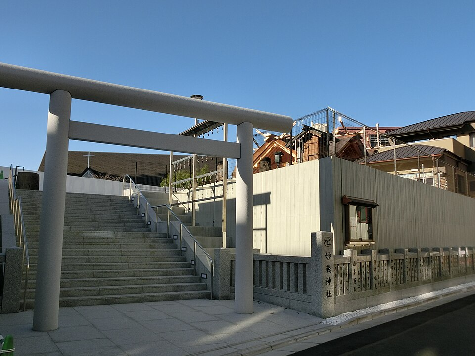
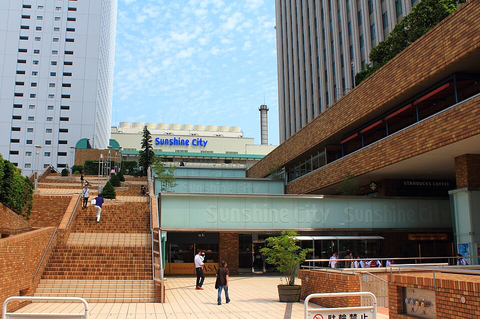
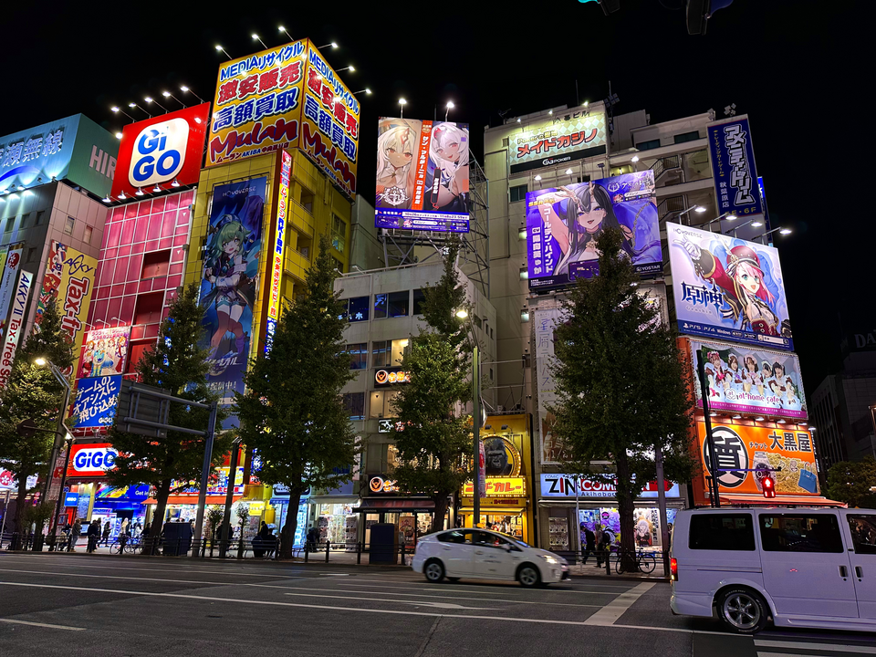
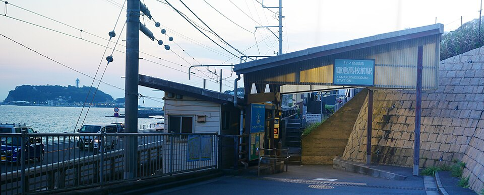
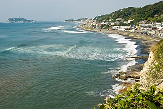
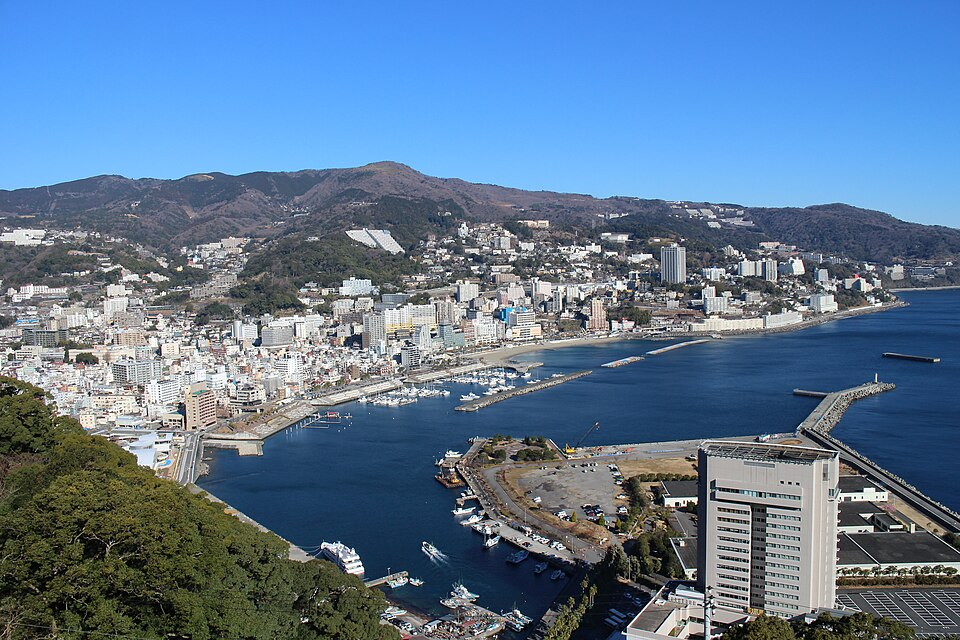
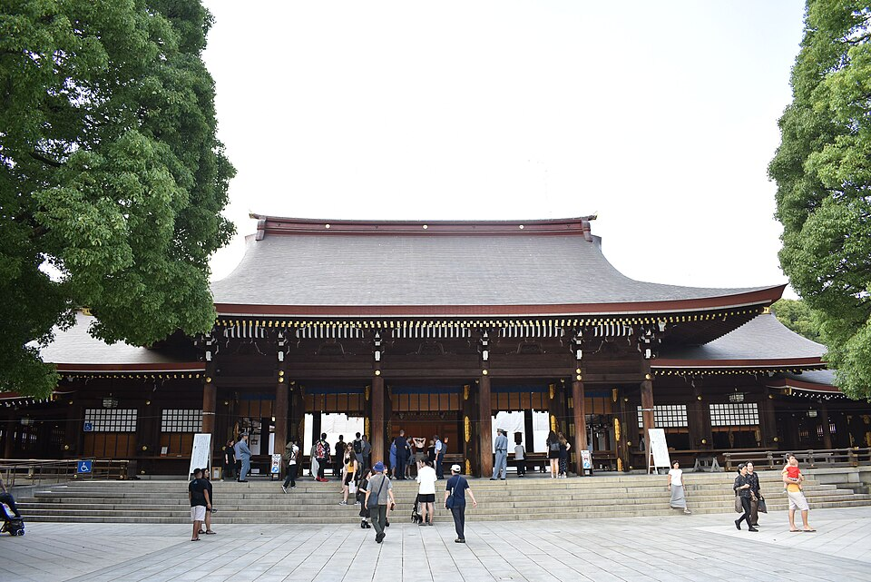
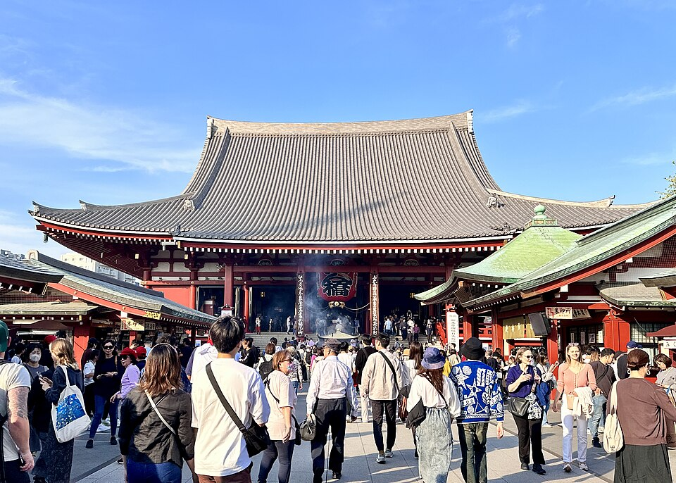

捷星日本 GK012
02:40 桃園機場 T1
07:00 成田機場 T3
成田機場 → 京成上野：Skyliner 約 51 分鐘

6 DAYS · 5 NIGHTS
東京 × 江之島 × 熱海 × 橫濱

Wikimedia ↗鳥居與社殿正面構圖

Wikimedia ↗太陽城標誌或寶可夢中心入口

Wikimedia ↗中央通密集招牌街景
 Wikimedia ↗
Wikimedia ↗仰角拍攝整座亮燈鐵塔

Wikimedia ↗電車、平交道與海景同框

Wikimedia ↗沙灘、海浪與江之島遠景
 Wikimedia ↗
Wikimedia ↗Sea Candle 與湘南海岸全景

Wikimedia ↗親水公園拍花火與海面倒影
 Wikimedia ↗
Wikimedia ↗成排招財貓的廣角畫面

Wikimedia ↗大鳥居與林蔭參道
 Wikimedia ↗
Wikimedia ↗竹下通牌樓或鏡面入口
 Wikimedia ↗
Wikimedia ↗SKY 頂樓拍東京夕景

Wikimedia ↗亮燈雷門與人潮散去後的街景